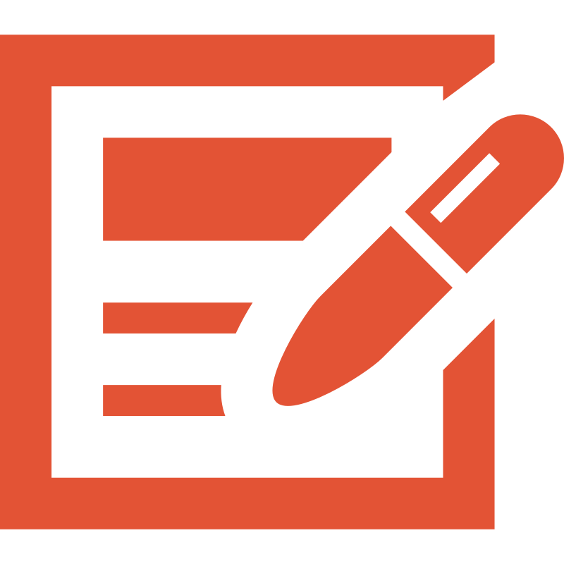

Use the green button to edit the resource (moderated: it may take a few days before changes appear).

From File Systems to Knowledge Graphs: A Multi-Phase Workflow for the Description of Born-Digital Literary ArchivesBorn-digital personal archives present novel descriptive challenges that conventional archival methods are not equipped to address. Their scale, format heterogeneity, and multi-layered stratification — physical, logical, and conceptual — require a representational framework capable of capturing document structure, provenance, integrity, and relational contexts. The increasing volume of born-digital archives received by cultural heritage institutions makes the development of automated and scalable description methodologies an urgent practical priority.
This paper presents a replicable five-phase pipeline, grounded in the Born-Digital Ontology (BoDi) — a formal extension of Records in Contexts Ontology (RiC-O) integrating PREMIS, PROV-O, and LRMoo — that transforms born-digital personal archive directories into RDF knowledge bases.